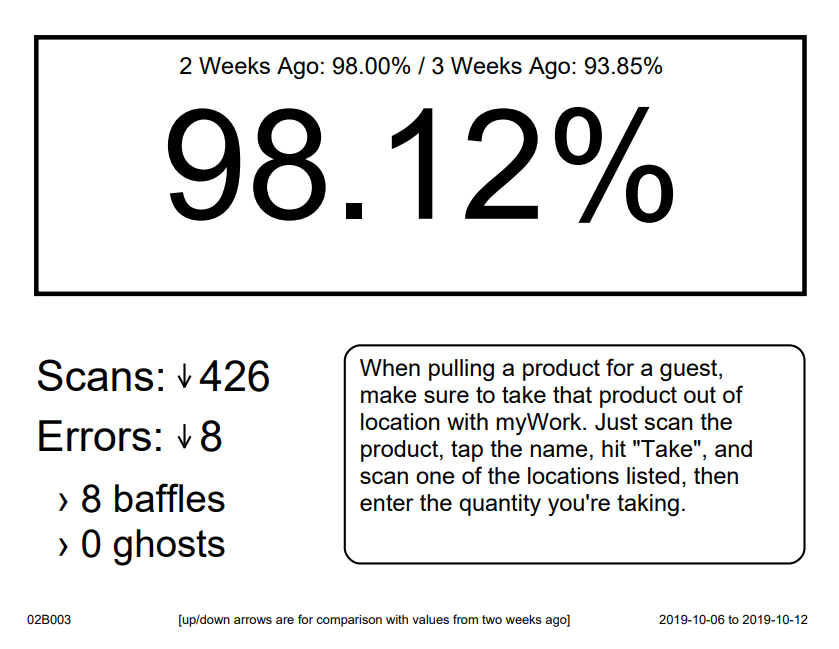

BRLA Sheets

This tool will create a sheet for each backroom aisle in your store.
Available options:
Create a PDF for each tier of BRLA (green, yellow, red)
Create sheets for bulk (99B) aisles
Select the backroom aisles you want to split by section
[check this if you have valleys in your backroom that share the same aisle number]
Add an arrow next to BRLA to indicate relative change
Complete the following steps:
Head to
T1013: BRLA Sheets
Click
Filter By
and filter by your Store
(Optional) You may also filter by Backroom and Backroom Aisle to show only those you wish to print
Click on the three vertical dots near the upper-right corner and select
Export to CSV
Click here to select the exported CSV